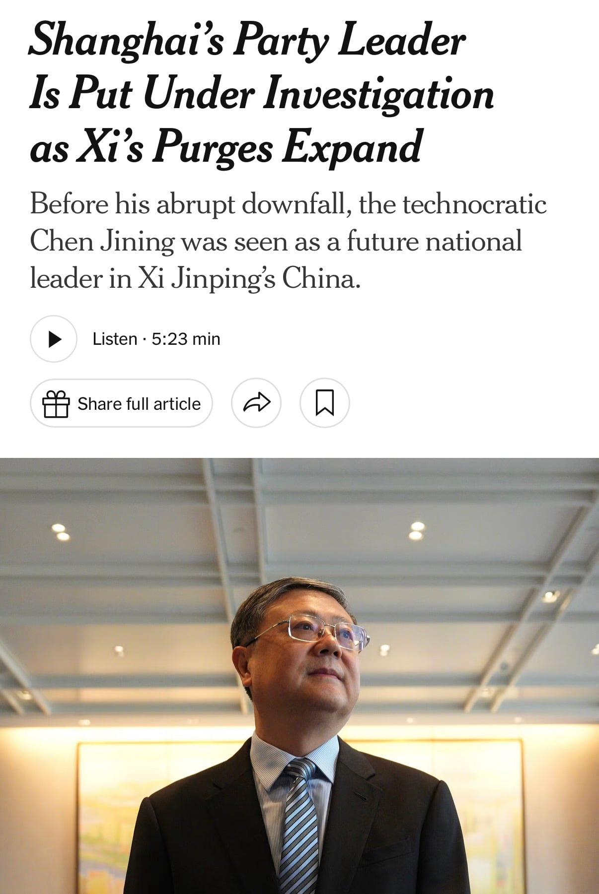

권력이 참 독함
시진핑은 뭐 누구한테 물려줄려고 저러는지 감도 안 오네
어느새 73살인데 뭐 영원히 살려고 하나보지

권력이 참 독함
시진핑은 뭐 누구한테 물려줄려고 저러는지 감도 안 오네
어느새 73살인데 뭐 영원히 살려고 하나보지
오스카 폰 로이엔탈 유명한 정치군인이지
지 뒤지고 난 뒤를 생각하겠어? ㅋㅋ
지 자식들 있는데 원한이 있을껀데
본인의 죽음이 세상의 끝이라 생각하면 뒤를 생각해둘 필요가 없지
시진핑 자식이나 손자있냐?
딸있잖음
딸조심해야함
범강 장달이야? ㅋㅋㅋ
근데 시진핑 죽고나면 가족들 어떻게 되는거 아님?
보통 후임들이 자기 죽은후도 생각해서
가족들 죽이진 않음
가족들은 정치랑 별 인연 없어보이던데 굳이 건들 필요가
보통 전임 정치인의 가족을 건드리는건 그걸로 인해 무언가 이득을 얻을 수 있을때의 이야기임
(예를들면 부패나 뇌물수수 혐의를 씌워서 그 일파의 잔재를 숙청한다던가)
그게 아닌 상황이면 괜히 건드려봤자 본인 정치력만 허공에 소모하고 얻는게 하나도 없음
물론 유족들이 그 후광을 뒤집어 쓰고 정치한다고 튀어나오기 시작하면 바로 때려잡겠지만 ㅋㅋ
마오 시절까진 가족들도 죽이고 귀양 보내고 했음. 문혁 때 다들 겪어 보고 나서 일정 급 이상의 중앙당 간부들은 감빵 보내는 한이 있어도 죽이거나 가족들 건드리지는 않는 걸로 합의를 본 거임.
그정도로 심하진 않나보네 땡큐
독재자의 말로는 다 좋지 않더라
그래서 독재자들의 롤모델이 김일성이라는 우스겟 소리가 있음
근데 북한 독재는 상태는 우리나라라는 억제기랑 방패막이가 있어서 가능한거 아니야?
거 장기 바꿔끼면 150살까지 산다고 진핑이가 지 입으로 푸틴한테 말한거 걸렸잖아.
장기 바꾸면서, 인공 장기 파츠 나올때까지 버틴 심산인가 본데?
미친
시진핑이나 푸틴이나 똑같지 뭐.
숙청됐다는게 죽었다는거야?? 뭘로 죽임? 걍?
저정도 권력자가 완전무결할수가없지 뭐든 껀덕지잡아서 숙청하면 그만
북한에서 숙청은 총살이지만 중국은 직위해제 시키더라ㅋ
아직도 머리 자르는줄 알았네
북한도 장성택마냥 직접적으로 위협되는 수준 아니면 진짜 죽이는 경우는 많지 않다고 본거같은데 확실하진 않음
법률 위반 혐의로 반부패 조사를 진행 중 이래
죽인건 아니구만..
지금 중국이 아무리 일인독재국가라고 해도 웬만한 걸론 옷만 벗기고 말지 죽이진 않음
건수잡아서 기소시킨다음 감옥보내던지, 가택연금시키던지 함. 시진핑 등장 전 유력한 주석 후보였던 보시라이도 숙청당해서 지금 감빵에 쳐박혀있음...
죽이는거 아님
시진핑 푸틴 김정은 동시에 짜장짜장 열매로 대가리 터져서 죽고 전쟁 터져서 트럼프 대통령직에서 존야 쓰면 전세계 좃되겠다
시진핑은 태자당(중국공산당 원년맴버들의 후신들) 출신인데, 상하이방(상하이에서 관료를 지낸 공산당원을 주축으로 결성된 계파, 대표인물은 장쩌민)의 지지를 받아서 총서기가 됨. 그러면서 자기가 권력 잡자마자 상하이방 존나 쪼아대고 심지어는 다크호스인 천지닝까지 나가리시켜버려서 이제는 뭐...
진짜 인생이란 몰라...정치에서 별볼일 없는 한낱 하꼬였던 시진핑이 중국 주석을 먹어서 권력을 남용할지 누가 알았겠어...
중국은 일당 독재지만 당내 계파가 있어 뭐 권력이 견제 받느니 하더만 ㅋㅋ 개같이 독재당하고 있네 ㄴㅋ
그런 소리하던 도올은 졸지에 눈 뜬 장님, 금치산자가 됐지
다른사람들 ai돌려서 리만가설 푸는동안 ai한테 영생하는법 물어보는 중인듯
내가알기로 상하이방이면 거의 후계자가 아니라 잠재정 정적 같은거라고 보면 될듯ㅋㅋ
시진핑은 베이징방쪽이고...
근데 지금 권력구도보면 과거 정통적인 세력구도 의미가 퇴색되긴함
시진핑 이미친놈이 1인독재한다고 뜯어고쳐서
뭐 글치 원래 공산당에서 독재 견제한다고 왔다갔다 한다고 들었는데 그것도 이제 옛날얘기라...
저 사람들은 일하는게 얼마나 재밌을까
핑핑이 푸틴 트럼프
2,3순위 키워줬다가 숙청하고 키워줬다가 숙청하고 반복 같은데
흔한 독재자네
뭐야 평범한 독재자 잖아.
중국에 대한 파벌주으적 관점은 코쟁이들이 이해를 돕기위해 맹근 틀에 가깝고 실제론 그리 딱딱 갈리는건 아닌데스우
그래서 너무 넓은 범위에 걸쳐 너무 많은 의미를 부여할 필요는 없고, 권위주의 국가들이 작동하는 원론적인 방식에 대한 이해 정도로 충분하다고 봐오
나혼자 다해 쳐먹는다 미래는 모른다. 이 케이스 같은데?
푸틴도 2000~2004, 2004~2008 하고 메르베데프가 한번하고 2012~
영구집권 이잖냐
시진핑도 뒤질때까지 할거 같고...
북쪽놈들같은 혈통세습은 자기 자식이 못 받으면, 그냥 다 뒤지는 판이라
죽어라 후계 짠다만.
저세끼들은 가짜민주주의 놀이라도 하려면 자식은 못 주잖아.
나까지 해먹고 자식세끼들은 그냥 부자로 살자는 주의인듯?
근데 중국 관료들 부패로 쌓은부가 어느정도 규모일지 상상이안됨..가끔 유툽이나 인스타보면 그냥 중소도시에서 잘나가는 사람도 강남1퍼센트 뺨치던데
네? 제가요?
내전 ㄱㄱ
독재자는 2인자를 용납하지 않는다고 했던가